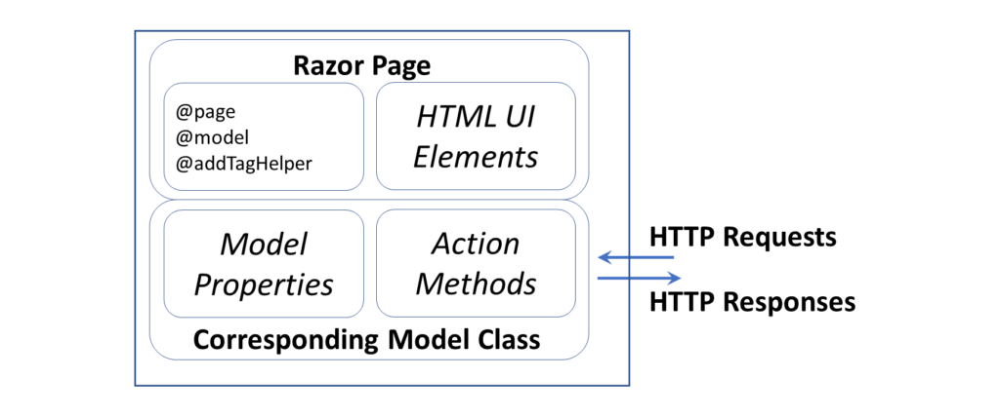

The goal of this project is to raise awareness on the evolution of COVID. The idea is to associate data and visualization tools such as graphs and tables, which will provide relevant information to the public regarding the present situation of COVID.
We want to to reach the general public, not experts familiar with graphs and numbers. For this reason, we will put a lot of effort on simplifying the visualization methods and representing it in such a manner that is accessible to everyone.
In this Scholarly HTML technical report we will try to cover the preliminary considerations about the Web application design and interaction, the provenece of external data resources and the applied technologies and pattern applied in the development process.
We will start with an application overview, by explaning the main functionalities available to the final users.
The next step would be provide basic information about the used technologies and the implied programming languages, as well as some informations about the used data source.
To round up we will provide the developers considerations and the limitations.
The major functions of the application are the following:
Waterfall methodology is a linear project management approach, where stakeholder and customer requirements are gathered at the beginning of the project, and then a sequential project plan is created to accommodate those requirements.
The 5 phases used in the develompent process of this project are:
The main technologies used for the Covid Data Visualisation Web application are:
ASP.NET Core Razor Pages is a server-side, page-focused framework that enables building dynamic, data-driven web sites with clean separation of concerns. Based on the latest version of ASP.NET from Microsoft - ASP.NET Core, Razor Pages supports cross platform development and can be deployed to Windows, Unix and Mac operating systems.
The Razor Pages framework is lightweight and very flexible. It provides the developer with full control over rendered HTML. The framework is built on top of ASP.NET Core MVC. Razor Pages is the recommended framework for cross-platform server-side HTML generation on .NET Core.
Razor Pages makes use of the popular C# programming language for server-side programming, and the easy-to-learn Razor templating syntax for embedding C# in HTML mark-up to generate content for browsers dynamically.
Bootstrap framework, formerly known as Twitter Bootstrap. It was built by Twitter for the mobile-first apps. It’s a complete and easy-to-use system of styles that helps deal with the daily tasks of a web developer.
Compared with other CSS frameworks, the biggest advantage of Bootstrap is the huge selection of additional templates, themes, and boilerplate code. It makes it very easy and fast to create a sophisticated web site without a design agency or without having any professional design skills.
There are also endless additions and extensions available to fill the rare gaps. Moreover, Bootstrap can handle desktop web sites and mobile device pages equally as well, so it’s really a one-stop solution.
Data source could provide the following data per country: total cases, new cases, total deaths, new deaths, total cases per million, new cases per million, total deaths per million, new deaths per million, population, population density, median age, aged 65 and older, aged 70 and older, GDP per capita, covid death rate, diabetes prevalence, hand washing facilities, hospital beds per thousand and life expectancy.
Because of the social implications of the analyzed phenomenon, we have to keep in mind a few constraints in the way in which we display the data.
Because COVID-19 testing and reporting are inconsistent among countries, it’s easy to misinterpret the data. That makes it especially important to create clear and accurate visualizations. Otherwise even simple and minimalistic graphics can be misleading.
Though this is a world-wide crisis, each state or territory reports its data differently. We track numbers provided by each state, but the quality and frequency of reports vary widely. Transparency is crucial. There is a need to publish details about inconsistencies in data reporting for every state and territory.
Charting the number of positive tests alone is often problematic. Simple case counts show where people are being tested, not necessarily where people are sick. For example, a country that reports three cases of COVID-19 after testing 2,000 people is probably in a different stage of its outbreak than a state that reports three cases but has only tested 20 people. But if all you have is a case count, those states look exactly the same. That is why it’s necessary to include the total number of tests as a denominator.